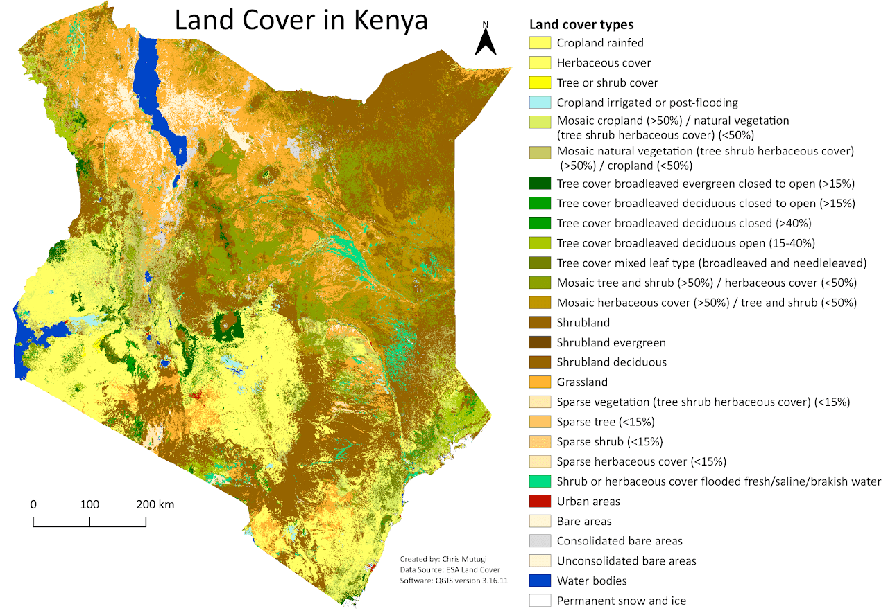
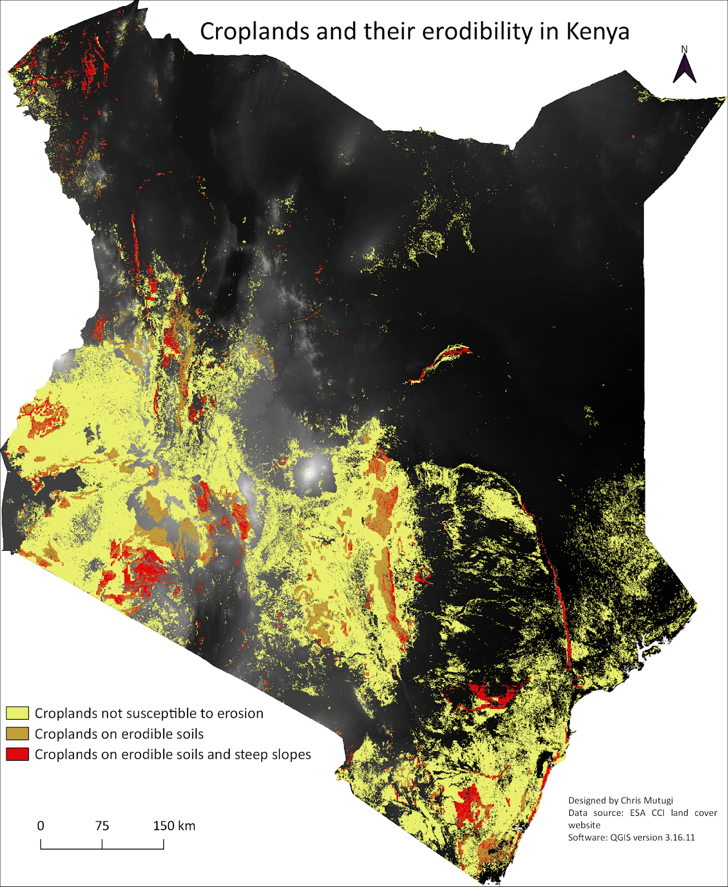
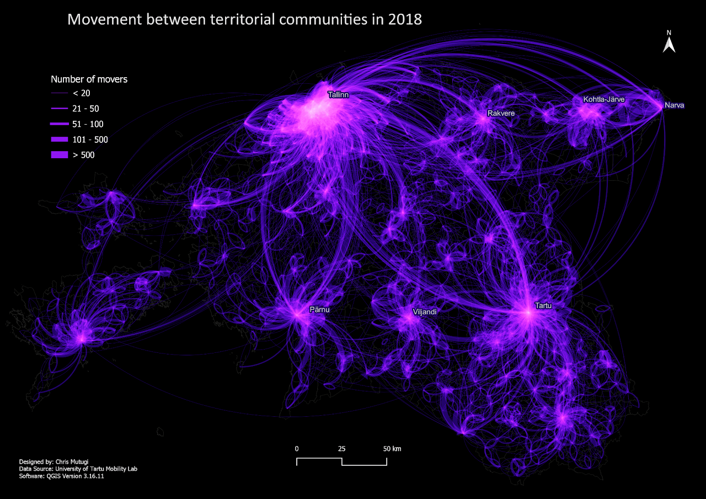
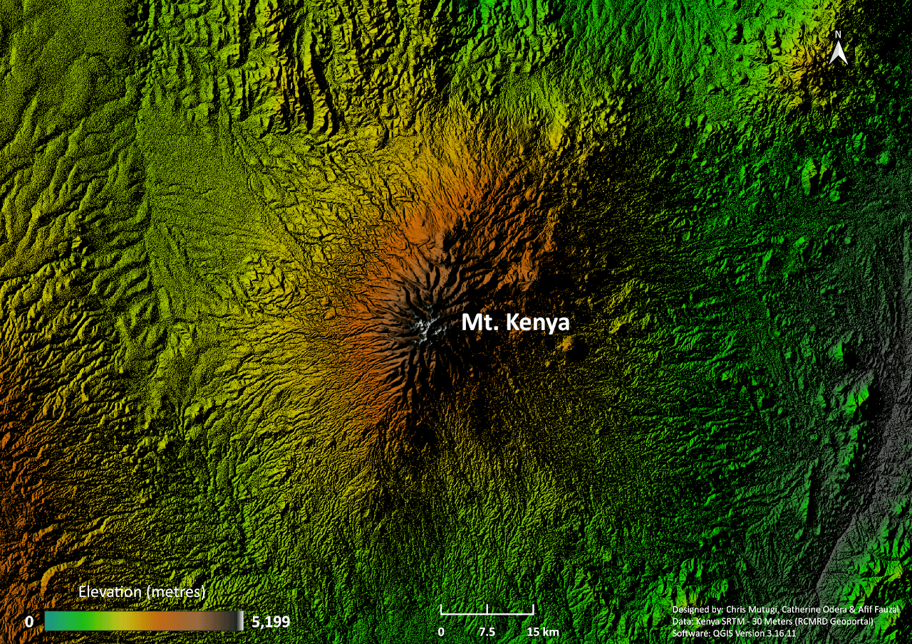
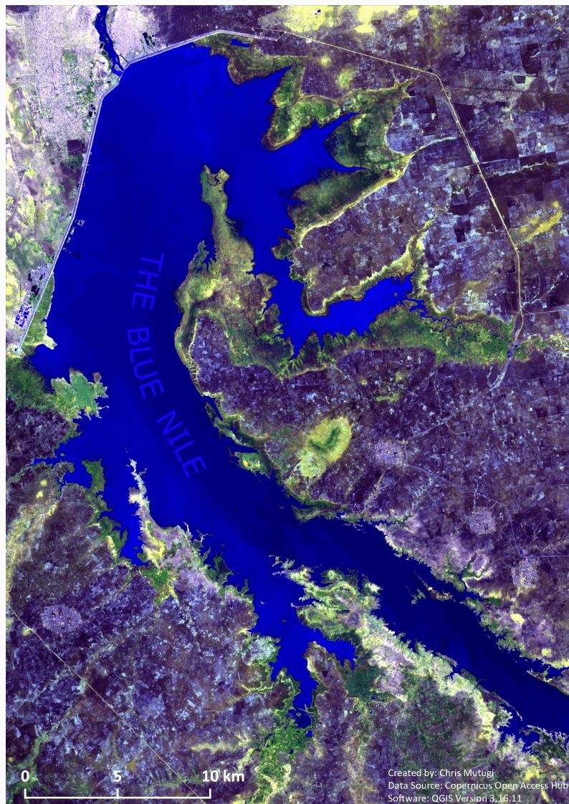

During the master's program, Chris has been involved in various types of projects, ranging from a global scale to the grassroots level. Some of these projects include Erodibility analysis, Mobility in Estonia, and the #30DayMapChallenge.
This task aimed at identifying croplands that were susceptible to erosion, using slope and soil texture as the factors for erosion. Classical GIS suitability analysis was employed, with the goal being to identify croplands in Kenya that are located on steep slopes with finer soil texture, hence making them susceptible to erosion. QGIS version 3.16.11 was used, and the land cover data obtained from ESA Land Cover 300m product – ESA Climate Change Initiative.
The Elevation data was from SRTM (Shuttle Radar Topography Mission) Tile Grabber, the Kenyan border shapefile from the GADM database, while the World Soil Database was obtained from ISRIC Soil Data Hub.
Kenya has an estimated 48.1% of its total land area under agricultural use. 9.8% of the said land is estimated to be arable; crops are replanted after each harvest, 0.9% under permanent crops; crops not replanted after each harvest, such as coffee and tea, while the remaining 37.4% of agricultural land is made up of permanent pastures; land with herbaceous forage that is cultivated or grows naturally (CIA World Factbook, 2021). Classical GIS can thus be applied in carrying out simple erodibility analyses.
A flow map of movements between territorial communities in Estonia was created using OD (Origin-Destination) matrices containing spatial and non-spatial details about where territorial movements began and ended, and the number of regular movers.
An elevation map, created during the 2021 #30DayMapChallenge, portraying the highest peak in a beautiful country called Kenya.
A composite from Sentinel 2 bands (12, 11 & 2) used to showcase the Blue in a section of the Blue Nile during the 2021 #30DayMapChallenge
